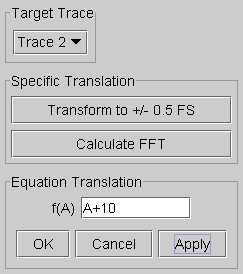
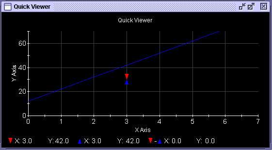

Translate...
This menu item provides the capability of transforming the waveform located in the Data Display Panel area. The function shows the transformation result in the same area. After selecting Translate..., you are prompted for a translation equation via an Equation Translation dialog box as shown below.

The translation shown in the Equation Translation dialog box involves offsetting the generated waveform by +2 points.
You can use the following simple operators:
- + to add a positive offset
- - to add a negative offset
- * to increase the waveform amplitude
- / to reduce the waveform amplitude
In addition, you can use many of the mathematical functions provided by the Signal Analyzer. See Waveform Equation.
After entering the equation, clicking the Apply button will display the translated waveform.

To view the entire waveform again, click the Auto Scale icon in the Graph Customization toolbar.